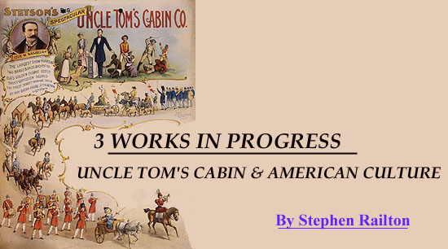

From
UNCLE TOM'S CABIN & AMERICAN CULTURE: A MULTI-MEDIA ARCHIVE
http://jefferson.village.virginia.edu/utc
PRESENTATION PAGES:
UTC ON STAGE
Illustrated Edition Cover (1852)
Daugherty Edition Titlepage (1929)
UTC AS CHILDREN'S BOOK
"I'se So Wicked"
Rose Merrifield in Aiken UTC (1853)
Merrifield in "Topsy Concert" (1853)
Conway Playbill (1852)
Smith's Double Mammoth UTC Company
Parsons & Pool's UTC & Tennessee Jubilee Singers
Niblo's Playbill (1875)
Howards' Newspaper Ad (21 May 1876)
Howards' Newspaper Ad (14 October 1877)
Howards in Boston (May 1877)
Tom Show Advertising Cards
Old Dan Emmit's Original Banjo Melodies (1843)
Frontispiece for
Aunt Phillis' Cabin
(1852)
UTC in New Orleans (1877)
Generic 16-Page Tom Show Flyer (1894)
Moyer Brothers' 4-Page Flyer (1919)
Edison-Porter UTC Movie: Auction Sale of Slaves (1903)
"At Uncle Tom's Cabin Door" (1913)
"Uncle Tom's Cabin: A Dream Vision" (1911)
Kemble's Illustration: Topsy as Missionary (1892)
Tom Show Lithograph (c1910)
Billings' Final Picture (1852)